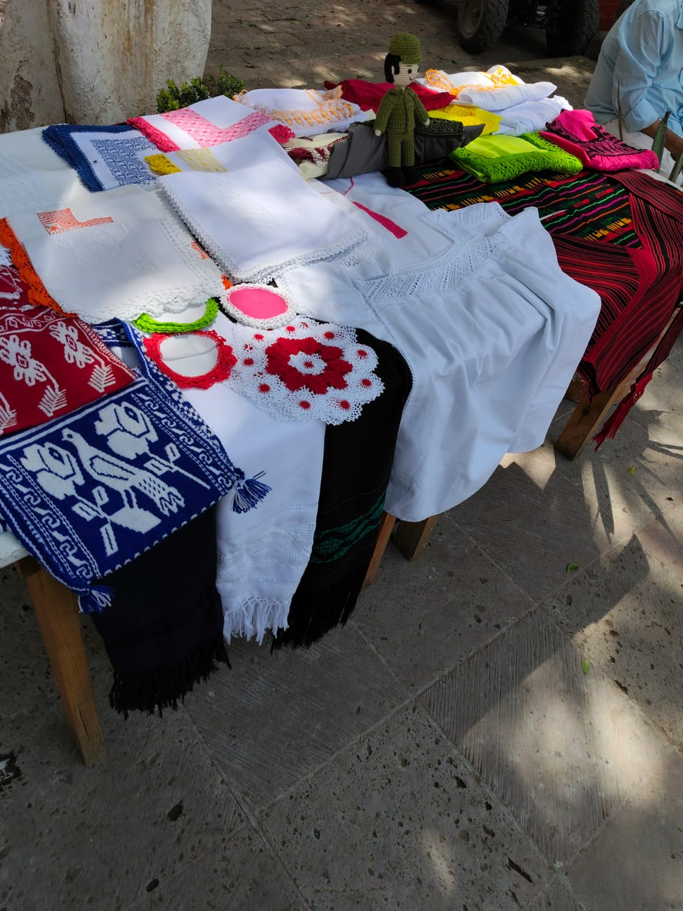
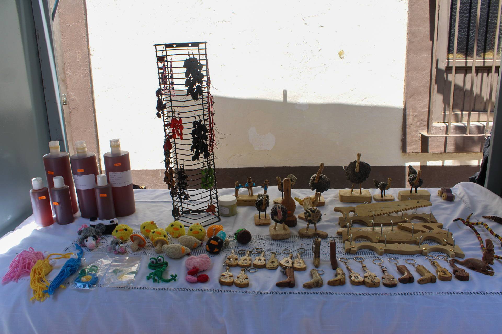
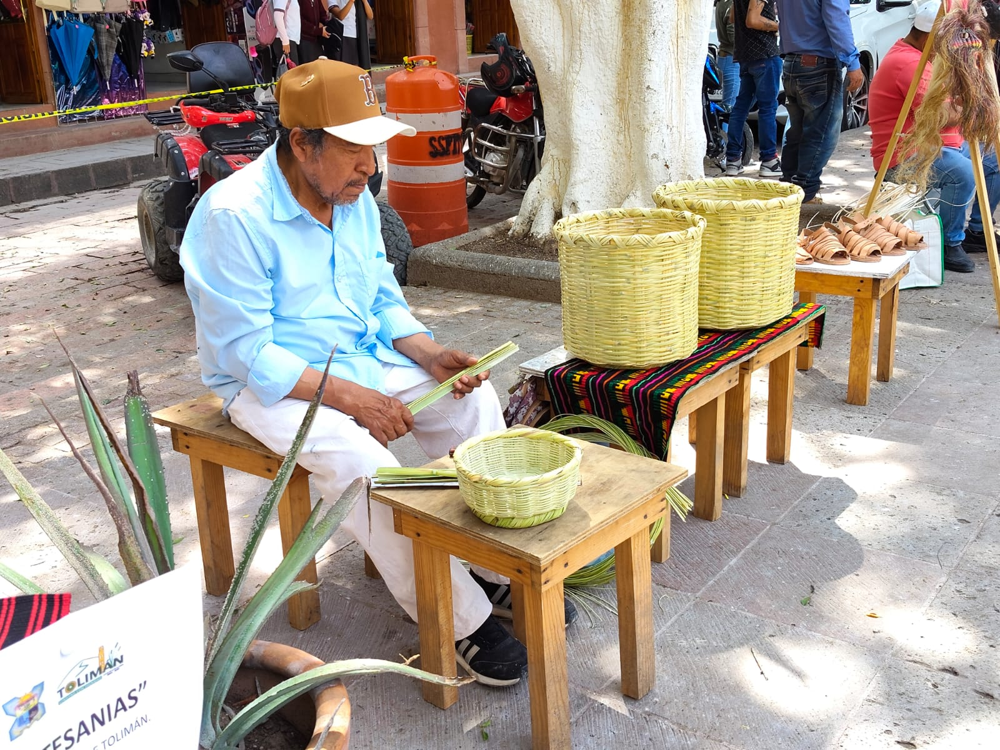
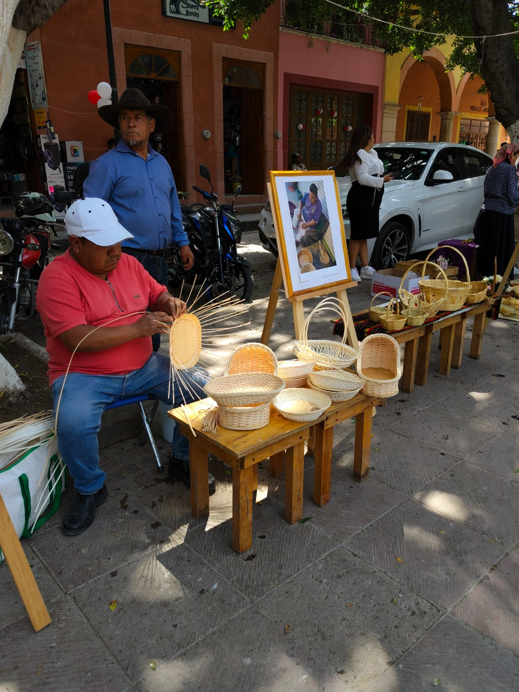

Tradición, identidad y trabajo hecho a mano

Diseños tradicionales llenos de color y cultura.

Piezas talladas a mano con gran detalle.

Elaboradas con palma e ixtle.

Arte en barro con identidad local.


Las artesanías de Tolimán reflejan la herencia cultural de las comunidades otomí-chichimecas. Cada pieza es elaborada con técnicas tradicionales transmitidas de generación en generación.

Una muestra única del talento artesanal local, elaborada completamente a mano.